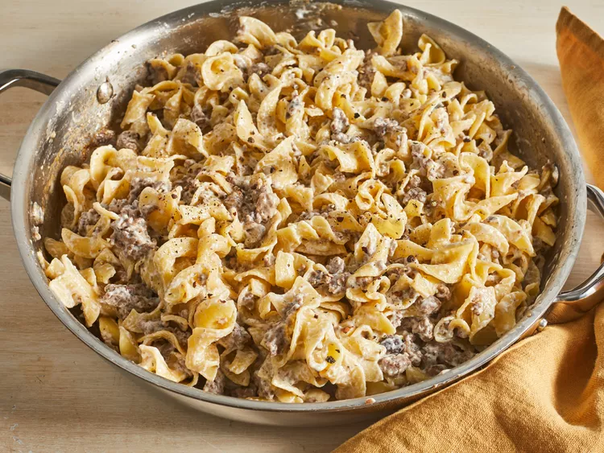

Simple Beef Stroganoff

Homemade stroganoff doesn't have to be hard!
This rich and creamy beef stroganoff recipe is made with ground beef and served with egg noodles.
It's super simple to perpare, and ready to serve in under 30 minutes making it a great choice for busy weeknights.
Garnish with freshly chopped parsley.
Beef stroganoff is an iconic Russian dish that consists of beef in a creamy sauce.
According to legend, it was created by chefs who worked for the Stroganov family in the 1800s.
The dish is often made with mushrooms and served over rice or egg noodles.
Ingredients
- 1 (8 ounce) package egg noodles
- 1 pound ground beef
- 1 (10.5 ounce) can fat-free condensed cream of mushroom soup
- 1 tablespoon garlic powder, or to taste
- 1/2 cup sour cream
- salt and ground black pepper to taste
Steps
- Gather all ingredients
- Saute ground beef in a large skillet over medium heat until browned and crumbly; 5 to 10 minutes.
- Meanwhile, fill a large pot with lightly salted water and bring to a rapid boil.
Cook egg noodles at a boil until tender yet firm to the bite, 7 to 9 minutes. Drain and set aside.
- Drain and discard any fat from the cooked beef. Stir condensed soup and garlic powder into the beef.
Simmer for 10 minutes, stirring occasionally.
- Remove beef from heat. Add egg noodles and stir to combine. Stir in sour cream and season with salt and pepper.
- Serve hot and enjoy!